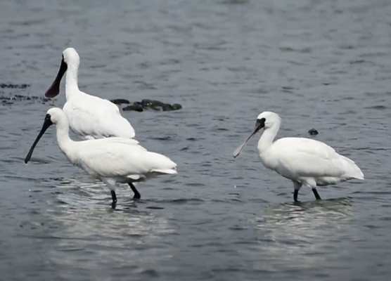

香山濕地是位於臺灣新竹市以南到與竹南鎮交界處，全長15公里，面積約1,700公頃，由頭前溪、牛浦河及鹽水溪河水沖刷而成，泥質潮間帶長約2公里，所累積的有機物質是碎屑食物網基礎的能量來源，孕育大量蝦、蟹、螺、貝，吸引大批水鳥覓食棲息。 2001年公告為新竹市濱海野生動物保護區，生態豐富，為北臺灣最大的蚵場，亦是臺灣沿海招潮蟹族群最繁盛的細泥灘濕地，也是西伯利亞鳥類遷徙的必經之處之一。
黑面琵鷺：身長70到80公分的黑面琵鷺是水鳥中的「大塊頭」，佇立在水鳥群裡非常突出，每年通過東亞遷徙路線往返度冬，9月至10月抵臺，會在香山濕地停棲覓食補充體力，一直待到翌年的3月至5月左右，儲備南遷或北返長途飛行的能量，才陸續飛離臺灣。春季北返的黑琵會換上新造型，頭上長出金色繁殖羽，順風吹成油頭、逆風變成龐克頭，加上覓食左右掃動匙狀長嘴，辨識度極高。

賞蟹步道：新竹市府在香山濕地美山區打造賞蟹步道、濕地中心和戶外教室，讓孩子親近大自然，獲得生態保育知識。賞蟹步道長250公尺，沿著步道可欣賞弧邊招潮蟹、德氏仿厚蟹等十多種螃蟹，退潮時「萬蟹奔騰」景象更是壯觀。透過賞蟹步道，讓市民與溼地更親近。賞蟹步道設計的弧度和彎道是根據螃蟹出沒地點與時間，讓民眾站在步道上就能欣賞豐富多樣的螃蟹物種，還能觀察可愛的彈塗魚與美麗夕陽。美山探索館區內則有豐富完整的濕地介紹，讓民眾能更了解這片大自然的環境。
香山濕地

@062mllsh

觀看更多完整影片